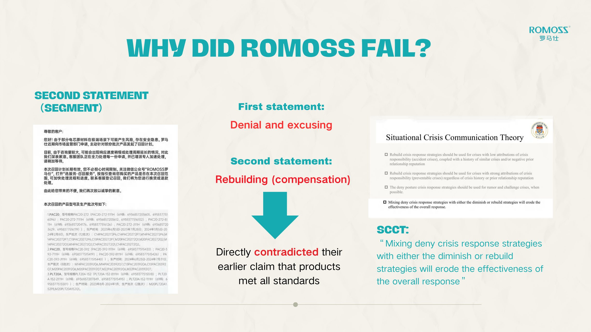
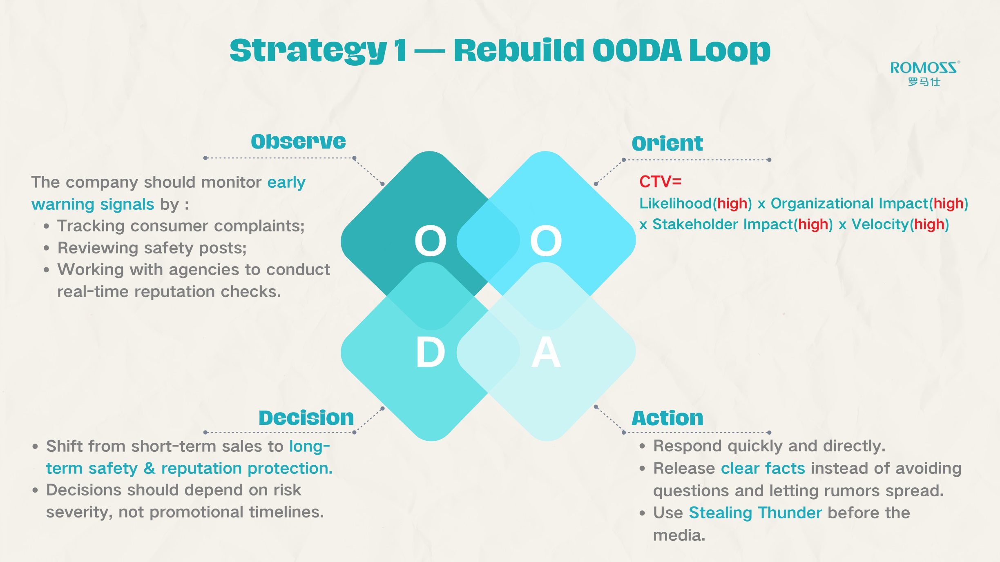

澳门大学传播学本科生，专注品牌营销、新媒体内容与数据驱动的传播实践。Communication student at the University of Macau, focused on brand marketing, new media content and data-driven communication.
一个完全独立运营的校园测评与资讯类小红书账号：面向澳门大学学生，提供学习空间测评、课程资讯、兼职信息等实用内容。An independently operated Xiaohongshu account serving University of Macau students with study-space reviews, course information, part-time job updates and other practical campus content.
针对 2025 年罗马仕充电宝安全危机的完整舆情分析：梳理品牌发展与危机时间线，用传播学理论拆解品牌四次公开声明的失误，并提出一套新的危机应对方案。小组课程项目，四人合作完成。A full analysis of ROMOSS's 2025 power-bank safety crisis: mapping the brand's development and crisis timeline, dissecting the failures of its four public statements through communication theory, and proposing a new crisis-response plan. A group coursework project completed by a team of four.
A品牌发展梳理Brand Mapping
创业（2012–14）→ 扩张（2015–19）→ 巅峰（2020–24）→ 崩塌（2025）四阶段，定位危机根源Four stages — start-up (2012–14), expansion (2015–19), peak (2020–24), collapse (2025) — to locate the roots of the crisis
B危机事件时间线Crisis Timeline
从 2019 年宿舍起火、召回 3,792 台，到 2025 年航班起火、21 所高校抵制、召回超 49 万台、停产 6 个月From the 2019 dorm fires and 3,792-unit recall to the 2025 in-flight fire, boycott by 21 universities, 490K-unit recall and 6-month production halt
CSCCT 声明分析SCCT Statement Analysis
以情境式危机传播理论逐句拆解四次公开声明：否认与重建策略混用、前后矛盾、透明度缺失Line-by-line analysis of four public statements via SCCT: mixed deny + rebuild strategies, internal contradictions, lack of transparency
D新方案设计New Response Plan
基于 OODA 循环与利益相关者分层，设计短期召回披露与长期信任重建行动An OODA-loop response with tiered stakeholders: short-term recall disclosure and long-term trust rebuilding
四次公开声明的回应策略拆解Response-strategy breakdown of the four public statements

分析发现：第一次声明「否认 + 找借口」，第二次声明转为「重建（赔偿）」，直接矛盾——SCCT 理论指出这种混用会侵蚀整体应对效果Key finding: statement one denied and excused; statement two switched to rebuilding (compensation) — a direct contradiction. SCCT shows such mixing erodes the overall response

新方案：以 OODA 循环重建危机响应机制New plan: rebuilding crisis response around the OODA loop
说明：本报告为小组合作项目（刘栩含与另外三位组员共同完成），分析对象罗马仕的舆情事件均为公开报道，报告仅作学术与作品集展示用途。Note: this report was a group project (completed by Xena Liu and three teammates). All crisis events analysed were publicly reported; the report is shown for academic and portfolio purposes only.
03
人物特稿《程记豆皮：一勺臊子半生烟火》Feature Story: "Cheng's Doupi — A Ladle of Topping, Half a Life of Craft"
Writing · 新闻写作Feature Writing
体裁Genre人物特稿 / 深度报道Feature story / in-depth report
选题Subject武汉金银潭地铁站口一对夫妇经营的无名豆皮摊，以及摊主谢老板三十七年的手艺坚守A nameless doupi stall run by a couple at Wuhan's Jinyintan metro station, and owner Mr. Xie's 37 years of dedication to his craft
结构Structure以「凌晨备料 → 清晨出摊 → 手艺源流 → 坚守与抉择」的时间与叙事双线推进A dual timeline: pre-dawn preparation → morning service → origins of the craft → perseverance and choices
报道配图：豆皮摊实拍Photo accompanying the story: the doupi stall
04
英语新闻视频English News Video
Content · 视频Video
作为小组作业，我主导完成选题、撰稿、配音与剪辑的英语新闻视频作品，完整版发布于 YouTube。As a group project, I took the lead in topic selection, scriptwriting, voice-over, and video editing for an English-language news video. The full version is available on YouTube.
AI 绘本《小熊做布丁》AI Storybook: Little Bear Makes Pudding
Content · 创意 / AICreative / AI
使用 AI 生成工具完成的水彩风格儿童绘本：从角色设定、画面分镜到成片视频，探索 AI 内容创作的完整工作流。A watercolor-style children's picture book created with AI generation tools — from character design and storyboarding to the final video, exploring a complete AI content workflow.
「希望将传播学与营销专业能力，落地到实际业务工作当中。」"Applying communication and marketing expertise to real business scenarios."
澳门大学传播学社会科学学士本科大四学生，CGPA 3.61/4.00，连续两年入选院长荣誉名单，2026 春夏学期于浙江大学完成交换学习。曾于 IBM、Ulike、时尚广州等机构实习，参与全球品牌战役本地化落地、新品上市营销、达人全链路投放、高奢品牌媒体传播、新媒体账号从零孵化等项目；擅长文案产出、市场竞品调研、跨部门项目协同、数据统计体系搭建与全套传播物料制作。A fourth-year Bachelor of Social Science student majoring in Communication at the University of Macau, with a CGPA of 3.61/4.00 and two consecutive years on the Dean's Honours List. Completed an academic exchange at Zhejiang University in the Spring–Summer 2026 semester. I have interned at IBM, Ulike, Fashion Guangzhou and other organisations, participating in global brand campaign localisation, new-product launch marketing, KOL full-cycle operation, luxury brand media communication and new-media account incubation. I deliver copywriting, market & competitor research, cross-departmental coordination, data-tracking frameworks and full communication materials.